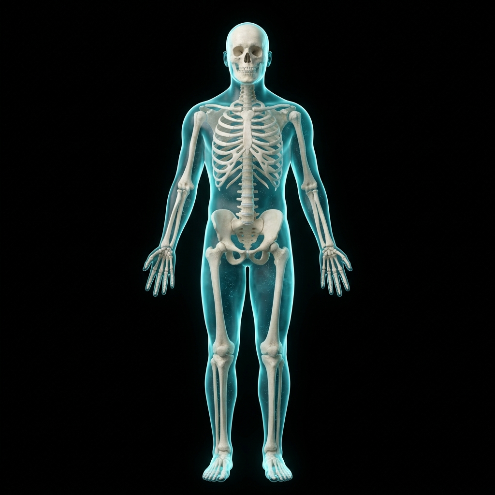
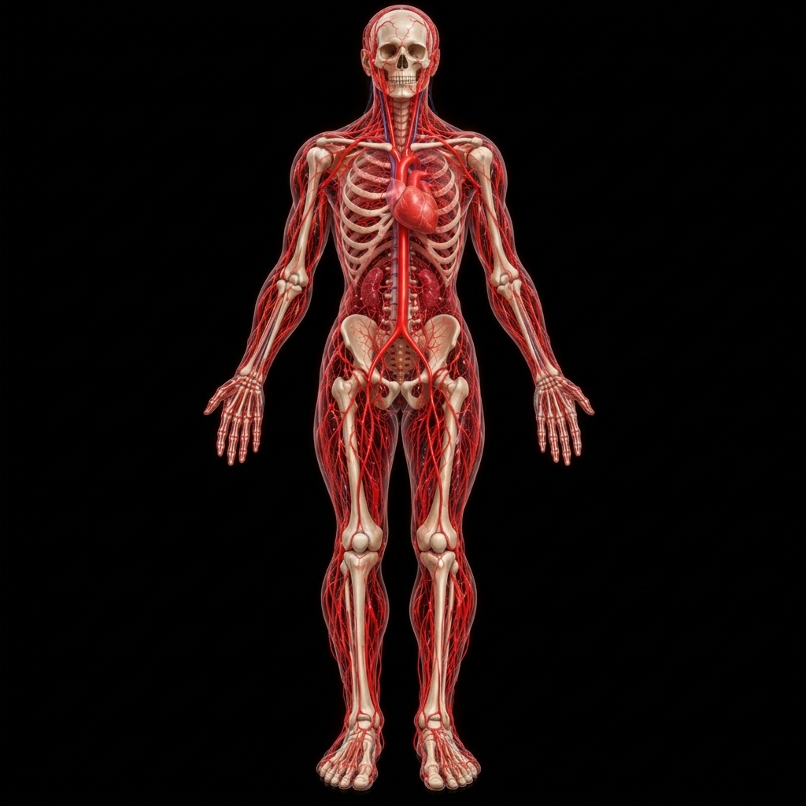
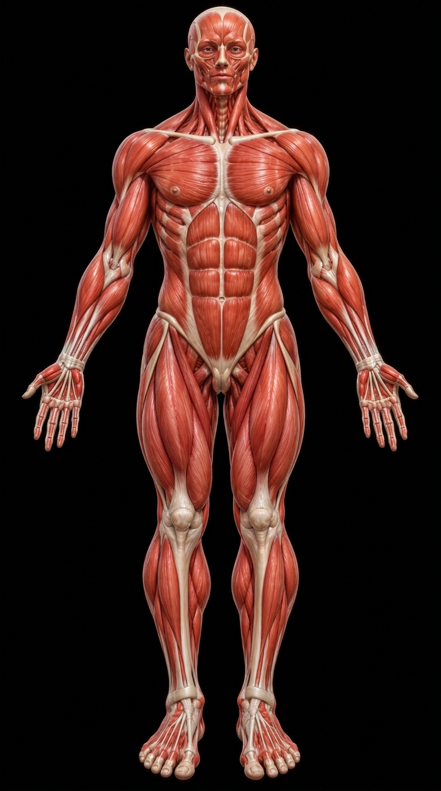
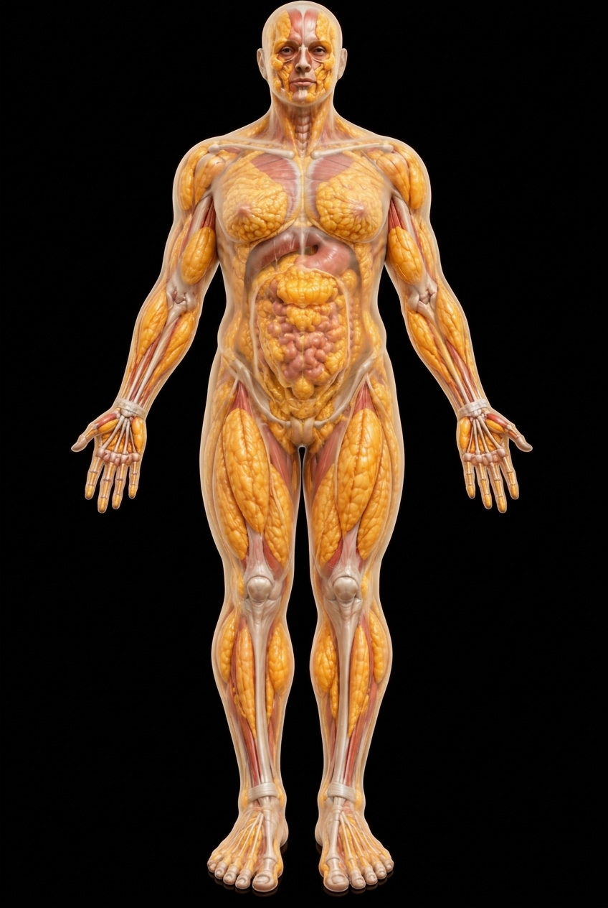
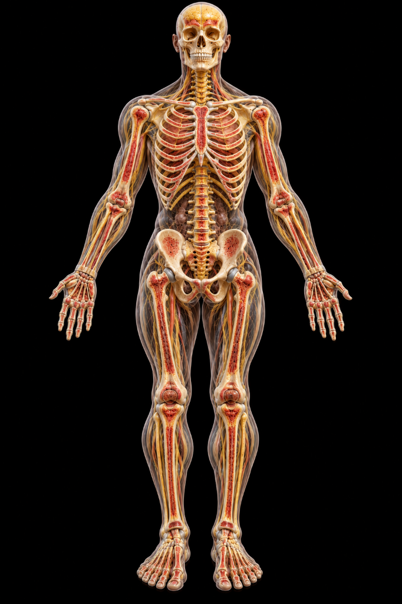
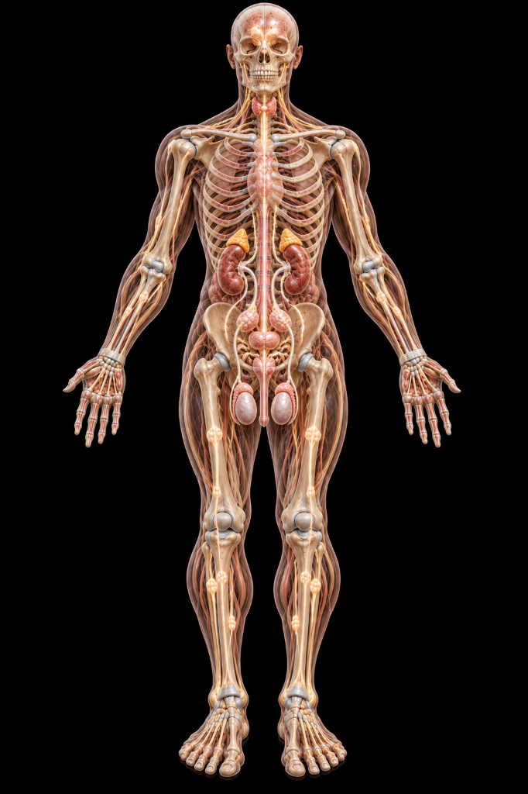

An interactive visual journey through the seven fundamental Dhatus described in Ayurveda. Explore the seven Dhatus through interactive anatomical visualizations inspired by traditional Ayurvedic concepts.
Purpose-built digital suite designed to study traditional Ayurvedic tissue concepts through modern anatomical interfaces.
Explore anatomical representations of each Dhatu.
Study anatomical structures from multiple views.
Zoom, pan, rotate where supported, and explore each Dhatu individually.
Learn the traditional Ayurvedic description and visual representation of each Dhatu.
Select a Dhatu to enter its interactive visualization.

The primary circulating nutrient fluid that hydrates tissues, sustains vitality (Preenana), and provides continuous nourishment to all subsequent Dhatus.

The life-sustaining red tissue (Jeevana) responsible for oxygenation, cellular vitality, complexion, and systemic thermal regulation.

The muscular framework that covers bones (Lepana), facilitates kinetic mobility, stabilizes joints, and maintains physical fortitude.

Adipose lipid tissue governing lubrication (Snehana), thermal insulation, structural cushioning, and nourishment of skeletal foundations.
The rigid mineral framework providing structural support (Dharana), shielding vital organs, and forming the physical architecture of the body.

The internal substance occupying bone cavities (Poorana), closely associated with neuro-endocrine signaling, cellular generation, and deep vitality.

The ultimate refined tissue responsible for regeneration, reproductive capacity (Garbhotpadana), holistic radiance, and the synthesis of Ojas.
Classical Ayurvedic concept describing progressive metabolic refinement from nutrient plasma to reproductive essence.
A streamlined, three-step methodology to navigate and inspect each Ayurvedic anatomical layer.
Choose one of the seven Dhatus from the interactive atlas based on tissue type or physiological interest.
Open its dedicated interactive anatomy viewer loaded with multi-dimensional rendered assets and specialized tooling.
Explore front/back views, visual layers, animations and educational information correlating classical insights with structure.
In classical Ayurveda, human physiology is sustained by three doshas, seven dhatus, and three malas. The word Dhatu originates from the Sanskrit root Dhā (धा), meaning "to sustain, support, or nourish."
Each Dhatu represents both a structural tissue stratum and a functional metabolic phase, transforming in succession from nutrient fluid (Rasa) down to reproductive essence (Shukra), culminating in pure constitutional resilience known as Ojas.
This project provides a digital educational visualization correlating classical Ayurvedic physiological philosophies with high-fidelity visual anatomical models. Traditional Ayurvedic concepts are distinct from modern biomedical histology, cellular pathology, and macroscopic anatomy. They are presented here for historical, cultural, and comparative academic exploration without asserting equivalence to modern empirical medical sciences.
Seven interdependent tissue layers supporting vitality and physical structural continuity.
High-precision anterior (front) and posterior (back) viewpoints for every tissue module.
Sequential Parinama transformation illustrating micro-nutrition and tissue genesis.
Zero-dependency lightweight visual platform accessible directly in any modern web browser.
Choose a Dhatu and enter the interactive anatomical visualization to examine detailed models, anatomical landmarks, and Ayurvedic descriptions.
EXPLORE 7 DHATUS